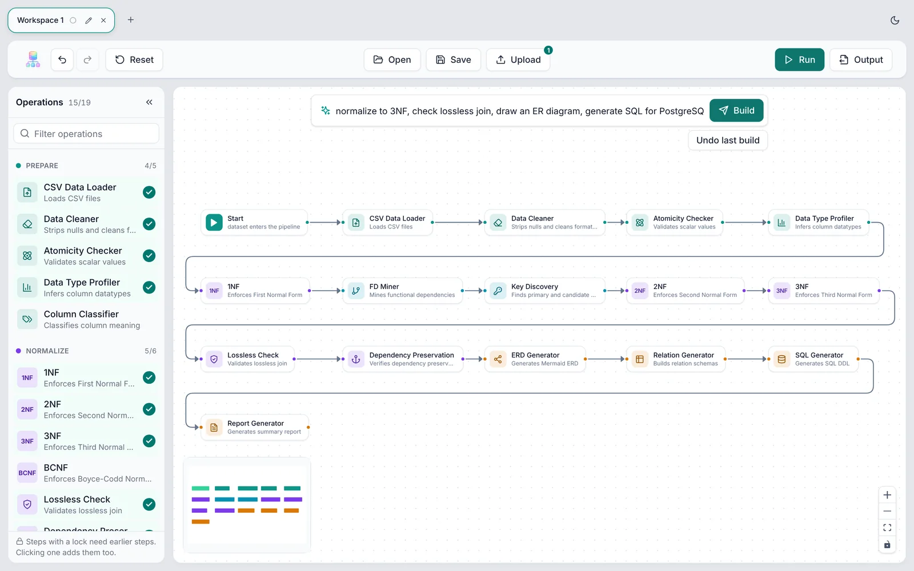
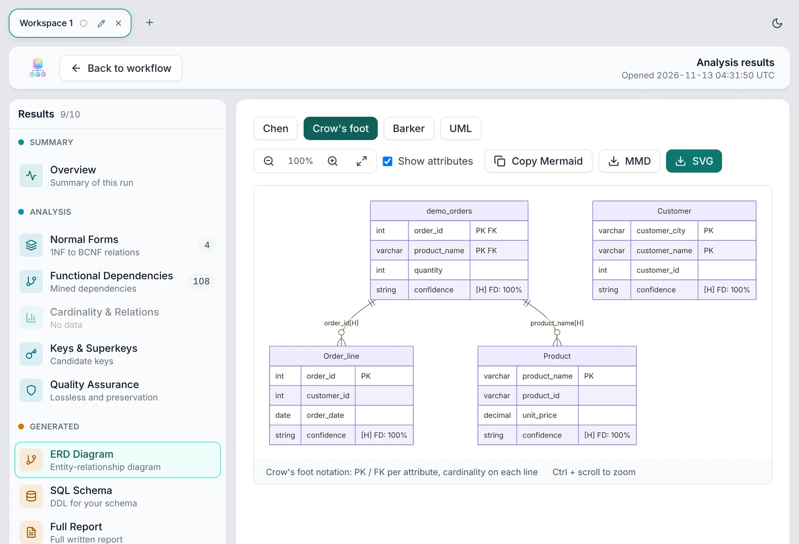

Find the keys. Split the table. Check what you lost.
NormaFlow reads a CSV or spreadsheet, mines its functional dependencies, splits it to 3NF or BCNF, and tests every split for lossless join and dependency preservation. It runs on your computer.
Looking up the latest version…
Table
Enrollment(student_id, course, teacher)
Dependencies found
{student_id, course} → teacher
teacher → course
BCNF
R1(teacher, course)
R2(student_id, teacher)
- Lossless join
- holds
- Dependencies kept
- 1 of 2
Lost: {student_id, course} → teacher. No single relation holds it any more.
3NF
Enrollment(student_id, course, teacher)
- Lossless join
- holds
- Dependencies kept
- 2 of 2
The table is already in 3NF, so nothing is lost. teacher → course still repeats a course for each of a teacher's students; BCNF removes that.
All downloads
| System | File | Size | SHA-256 |
|---|
What is in the app
- Request box
- Type a goal, such as “normalize to 3NF and generate SQL” or “run all steps”. The preview lists the steps before anything runs.
- Pipeline
- Nineteen steps from loading to the report, on a canvas you can edit. Each workspace keeps its own files, pipeline and results.
- Checks
- Every decomposition is tested for lossless join and dependency preservation, on the data as well as on the dependencies.
- Output
- ER diagram in Chen, Crow’s foot, Barker or UML notation. SQL DDL for PostgreSQL, MySQL, SQLite or ANSI. Normalized data and a PDF report.
- Input
- CSV, XLSX, XLS and ODS. Each sheet of a workbook becomes a table, and several files are linked by detected foreign keys.
- Table names
- A small model suggests names for new tables and marks them suggested. It was right for about two tables in three in our test, so check them. You can rename any of them.
- Privacy
- Files are analyzed on your machine. The two small models ship in the installer, and the app makes no network requests while it runs.


Installing
Windows
Run the .exe installer, or the .msi for managed installs. The installer is not code-signed, so Windows may show “Windows protected your PC”. Choose More info, then Run anyway.
macOS
Open the .dmg and drag NormaFlow to Applications. Choose Apple Silicon for an M1 or later Mac and Intel for an older one (Apple menu, About This Mac). The app is not notarized, so the first time, right-click it and choose Open.
Linux
AppImage: chmod +x NormaFlow_*.AppImage, then run it. Debian, Ubuntu: sudo apt install ./NormaFlow_*.deb. Fedora, RHEL: sudo dnf install ./NormaFlow-*.rpm.
Check a download
Compare the SHA-256 in the table with the one you compute: sha256sum FILE on Linux, shasum -a 256 FILE on macOS, Get-FileHash FILE in Windows PowerShell.